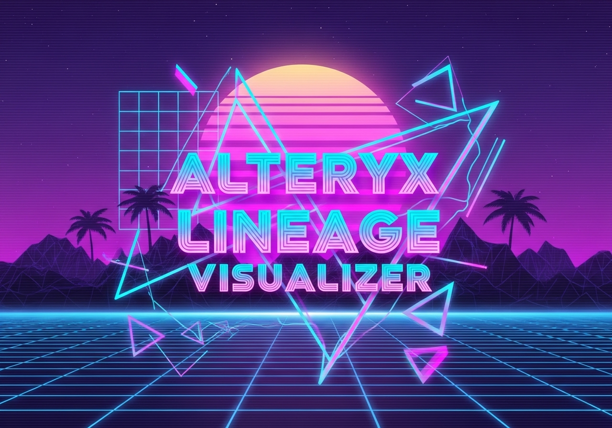
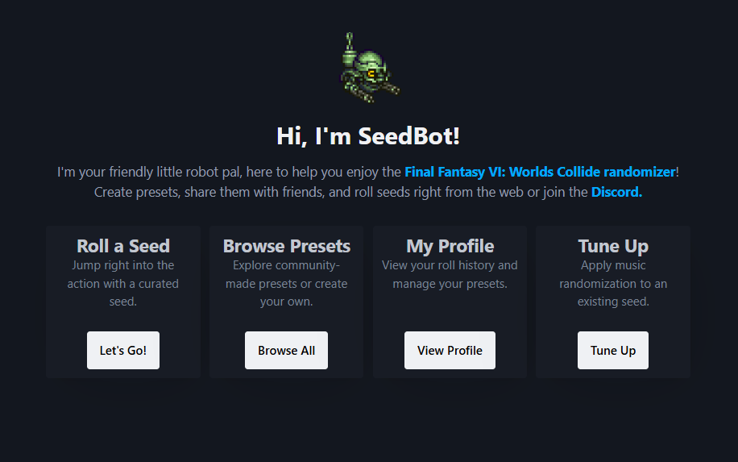

Featured Projects
Python / Streamlit
Alteryx Lineage & Impact Analysis
A web application built to parse Alteryx workflows, store their metadata, and provide powerful lineage analysis. This tool helps data teams understand dependencies, perform "blast radius" impact analysis, and trace individual fields from source to destination.

Python / Discord API
SeedBot
A custom Discord bot designed for video game communities. SeedBot automates community interactions, tracks metrics, and provides a seamless experience for users interacting with game randomizers.

Web Application
Archipelago Tracker
A tracking tool built for the Archipelago multi-game randomizer. This application helps players monitor items, locations, and game progression across complex, randomized multi-world environments.